TOP BRANDS

1.Starbucks
It's one of the most successful companies in the world, not only in the coffee shop business. It is so successful because it was able to provide an experience that changed how much of the world thought about coffee shops and how many of us drink coffee outside of our homes.
2.Dunkin' Doughnuts
Dunkin' is the world's leading baked goods and coffee chain, serving more than 3 million customers each and every day. True to our name, we offer 50+ varieties of donuts, but you can also enjoy dozens of premium beverages, bagels, breakfast sandwiches and other baked goods.
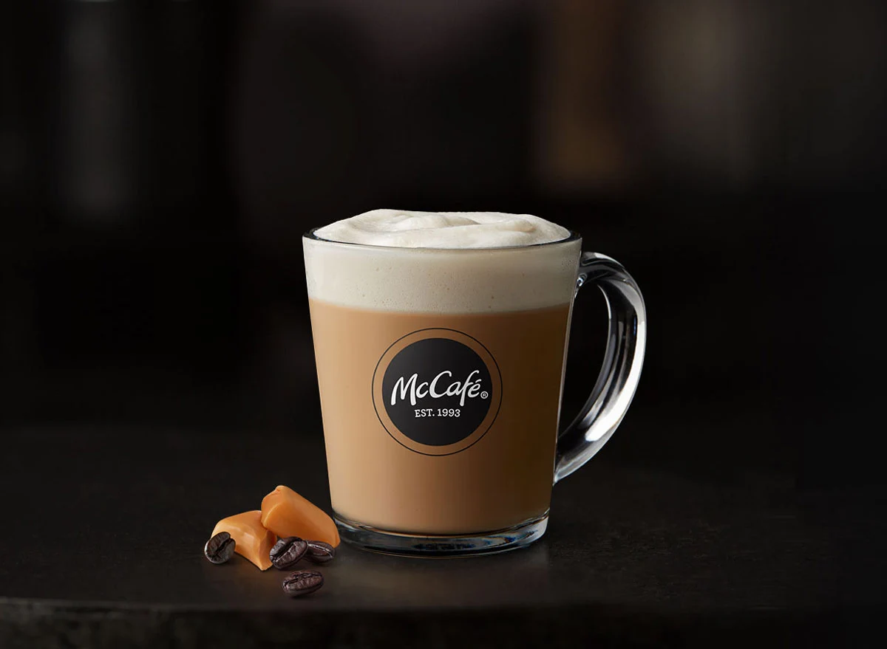
3.McCafé
The chain spread to 13 countries by 2002,[2] with the first one in the United States opened in Chicago, Illinois, in May 2001 when there were about 300 worldwide.[4] In 2004 McCafé opened in Costa Rica and in France, and the next year, the concept was launched in Italy. In June 2006 the first McCafé in Bulgaria opened at the Mall of Sofia.
4.Peet's Coffee
Peet's is known for having extremely fresh, high quality coffee, and those new to the chain will recognize the superior quality on first sip. It's no surprise that one of their top sellers is a single origin coffee from Guatemala.
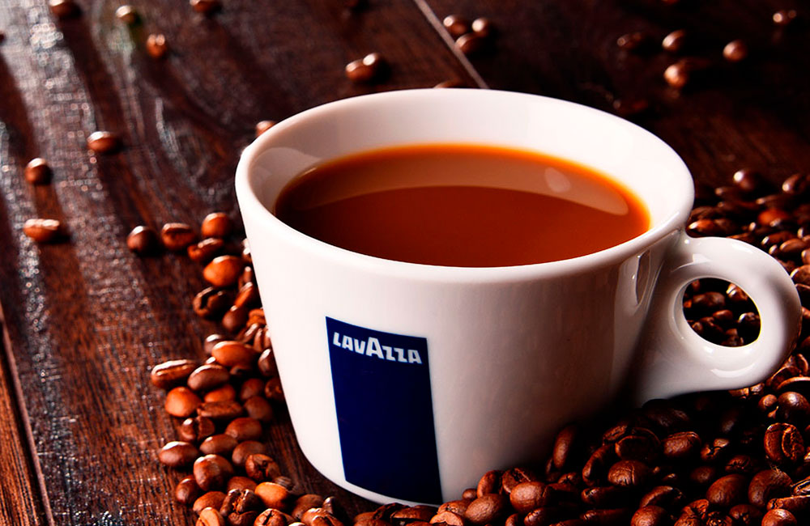
5.Lavazza
A sophisticated and aromatic blend of selected Arabica and Robusta coffee beans characterised by its sweet aroma of almonds and milk chocolate with a hint of dried fruits.
GALLERY
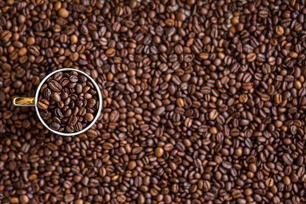
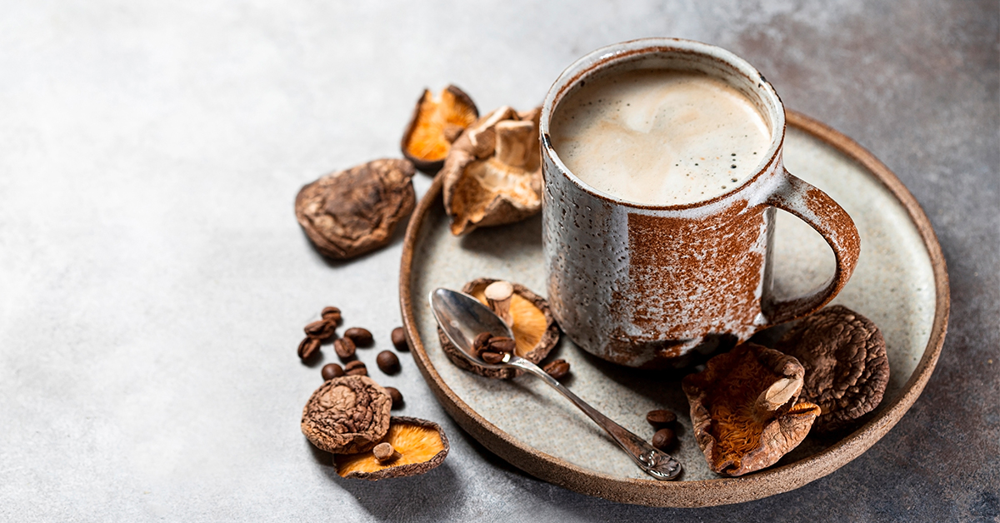
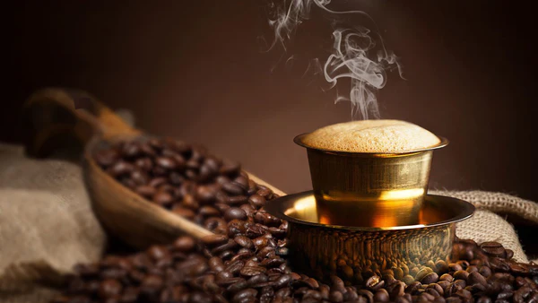
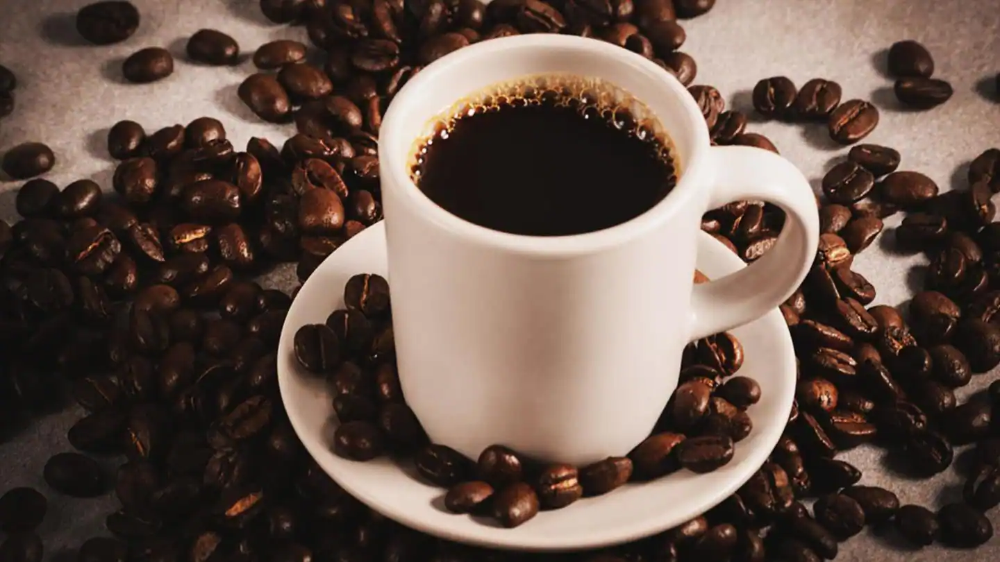
 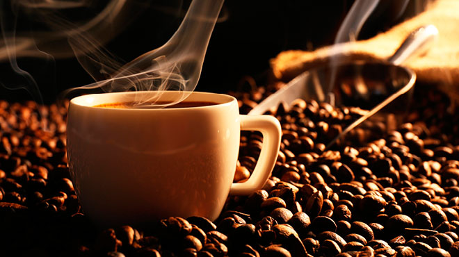
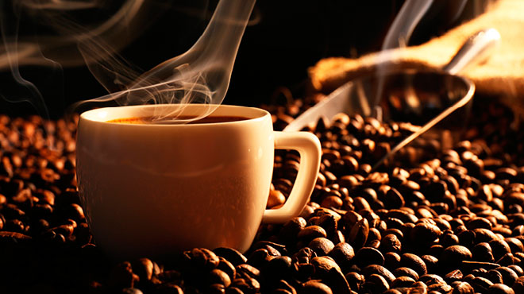
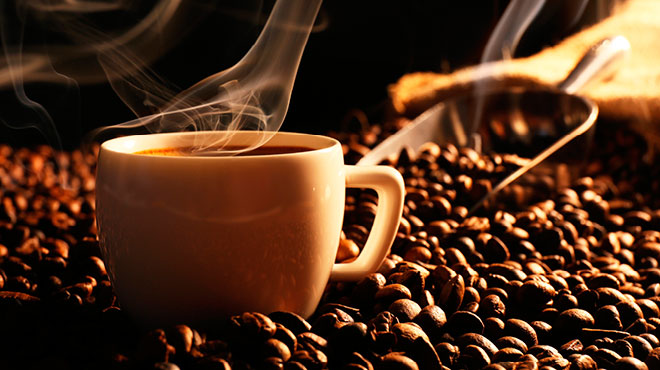
 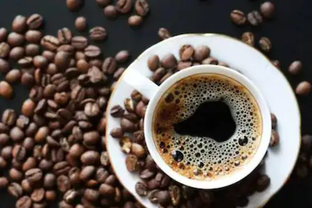
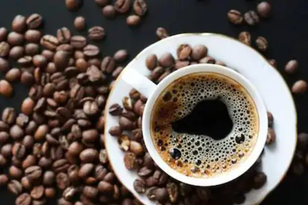